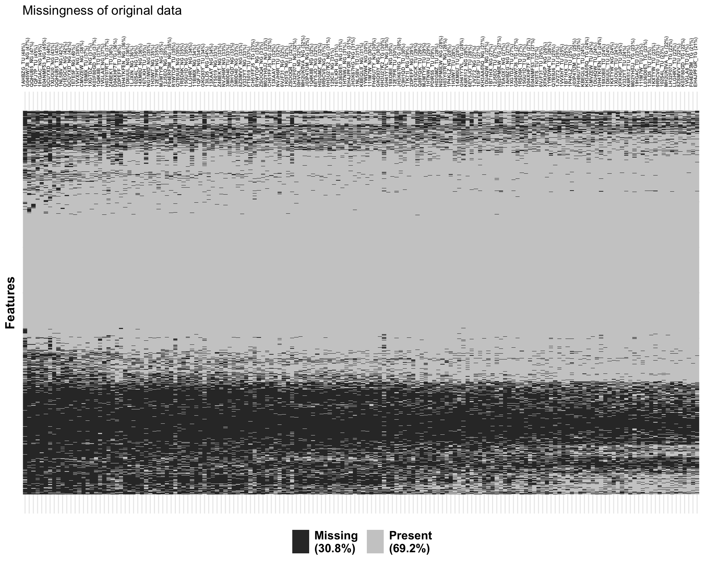
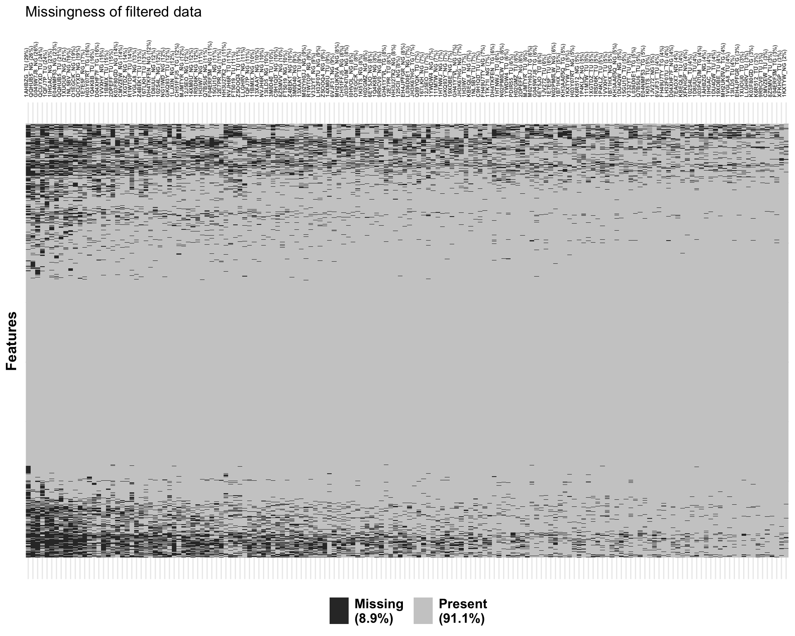
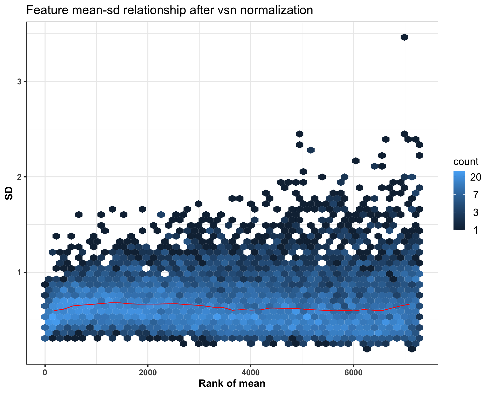
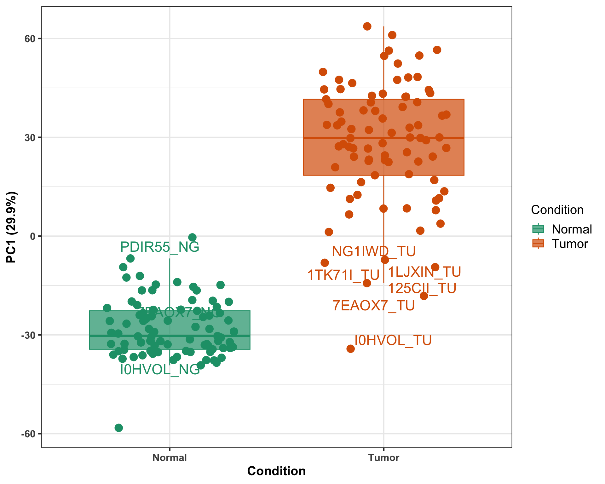
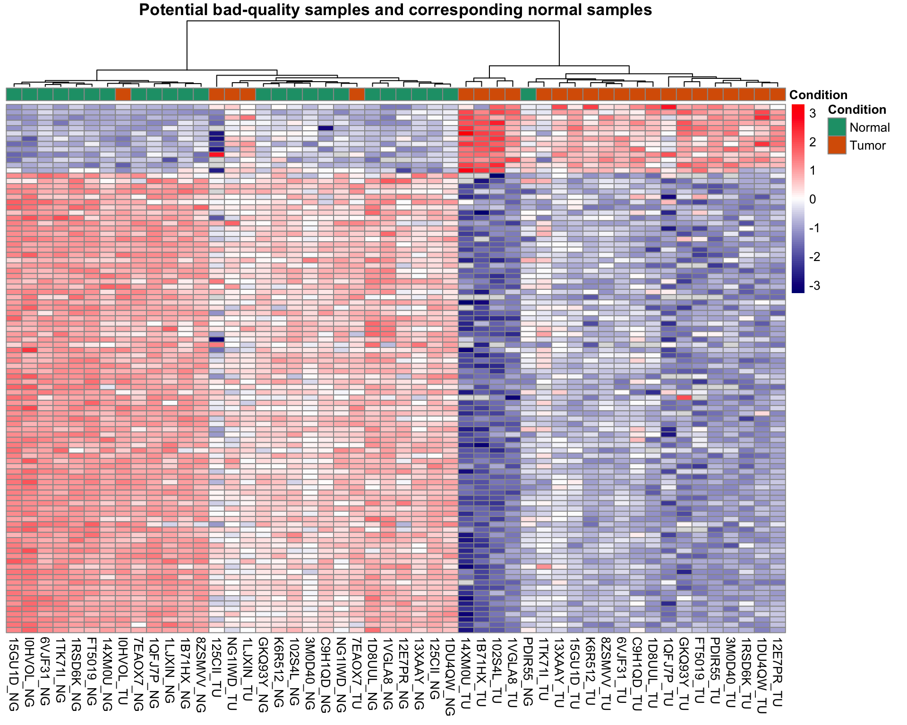
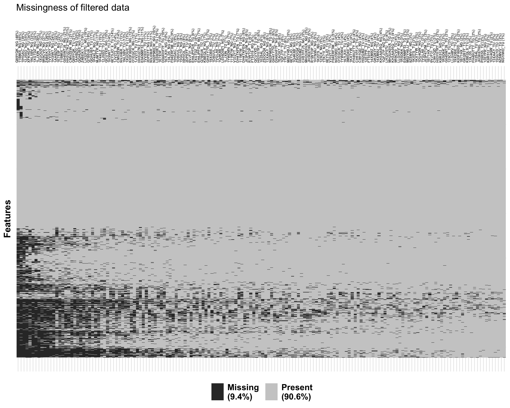
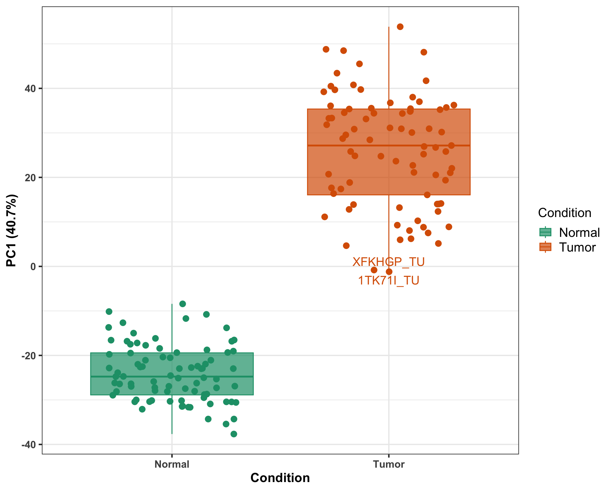
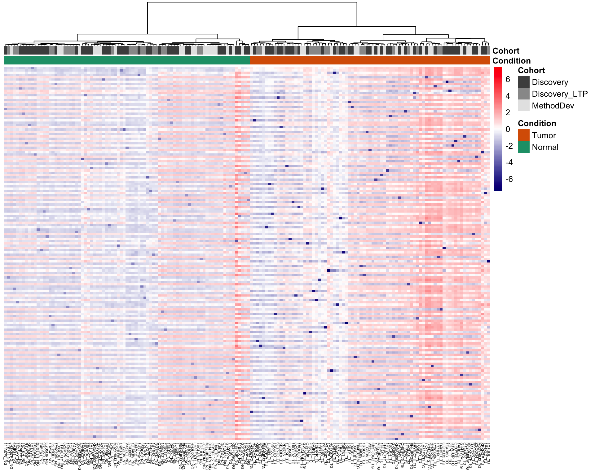
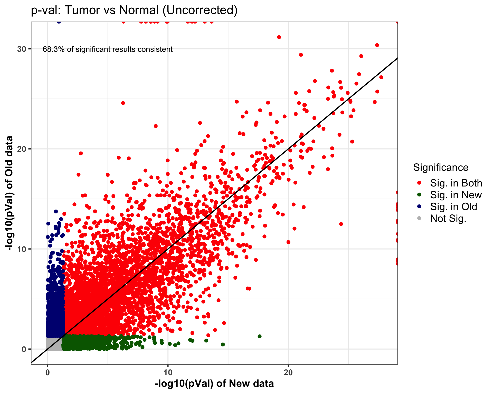
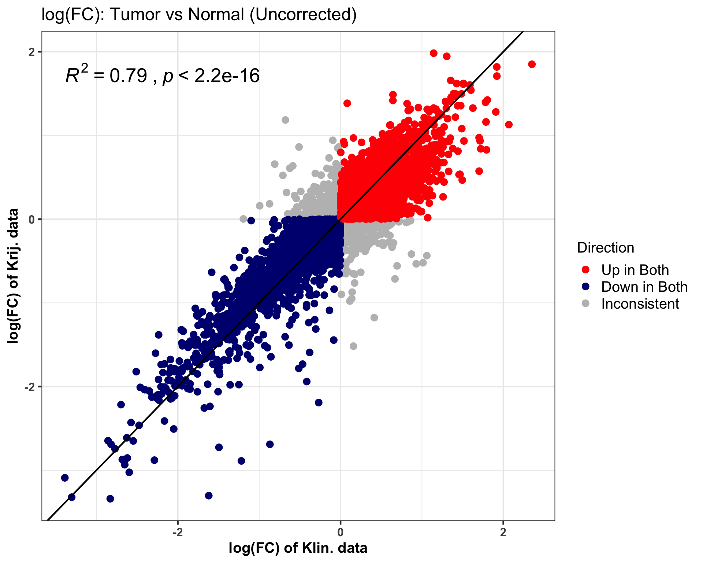

Preprocessing: DIA Proteomics of Method Dev and Discovery cohorts
Qian-Wu Liao
Last updated: 2024-07-30
Checks: 6 1
Knit directory: SMART-CARE_LungCancer/
This reproducible R Markdown analysis was created with workflowr (version 1.7.1). The Checks tab describes the reproducibility checks that were applied when the results were created. The Past versions tab lists the development history.
Great! Since the R Markdown file has been committed to the Git repository, you know the exact version of the code that produced these results.
Great job! The global environment was empty. Objects defined in the global environment can affect the analysis in your R Markdown file in unknown ways. For reproduciblity it’s best to always run the code in an empty environment.
The command set.seed(20230425) was run prior to running
the code in the R Markdown file. Setting a seed ensures that any results
that rely on randomness, e.g. subsampling or permutations, are
reproducible.
Great job! Recording the operating system, R version, and package versions is critical for reproducibility.
Nice! There were no cached chunks for this analysis, so you can be confident that you successfully produced the results during this run.
Using absolute paths to the files within your workflowr project makes it difficult for you and others to run your code on a different machine. Change the absolute path(s) below to the suggested relative path(s) to make your code more reproducible.
| absolute | relative |
|---|---|
| /Users/qianwu/Desktop/SMART-CARE_LungCancer | . |
Great! You are using Git for version control. Tracking code development and connecting the code version to the results is critical for reproducibility.
The results in this page were generated with repository version 282daae. See the Past versions tab to see a history of the changes made to the R Markdown and HTML files.
Note that you need to be careful to ensure that all relevant files for
the analysis have been committed to Git prior to generating the results
(you can use wflow_publish or
wflow_git_commit). workflowr only checks the R Markdown
file, but you know if there are other scripts or data files that it
depends on. Below is the status of the Git repository when the results
were generated:
Ignored files:
Ignored: .DS_Store
Ignored: .RData
Ignored: .Rhistory
Ignored: analysis/.DS_Store
Ignored: code/.DS_Store
Ignored: data/.DS_Store
Ignored: data/Discovery/
Ignored: data/MethodDev/
Ignored: data/aliquot_metadata.xlsx
Ignored: data/metadata_latest/
Ignored: data/patient_metadata.xlsx
Ignored: data/sample_metadata.xlsx
Ignored: output/.DS_Store
Ignored: output/Discovery/
Ignored: output/MethodDev/
Ignored: output/SC_meeting/
Untracked files:
Untracked: analysis/CrossCohort_investigation_EXP.Rmd
Untracked: code/archive/
Untracked: code/data_availability.Rmd
Untracked: code/dataset_list.R
Untracked: code/workflowr_commands.R
Unstaged changes:
Modified: analysis/FeatSelection_ML.Rmd
Modified: analysis/MDev_Dis_02_soa_annotated_untargeted.Rmd
Note that any generated files, e.g. HTML, png, CSS, etc., are not included in this status report because it is ok for generated content to have uncommitted changes.
These are the previous versions of the repository in which changes were
made to the R Markdown
(analysis/MDev_Dis_01_preprocessing_DIA.Rmd) and HTML
(docs/MDev_Dis_01_preprocessing_DIA.html) files. If you’ve
configured a remote Git repository (see ?wflow_git_remote),
click on the hyperlinks in the table below to view the files as they
were in that past version.
| File | Version | Author | Date | Message |
|---|---|---|---|---|
| Rmd | 258edf9 | LiaoQianWu | 2024-07-29 | Do protein abundance profiling of potential bad-quality tumor samples and compare analysis results of newly and previously generated data |
| Rmd | 40a33b2 | LiaoQianWu | 2024-07-12 | Assess effects of SVs correcting data by reproducibility between new and old proteomics from AG Klin. |
| Rmd | b5f8cac | LiaoQianWu | 2024-07-05 | Check data reproducibility between new and old tissue DIA proteomics from AG Klin. |
| Rmd | e957730 | LiaoQianWu | 2024-07-02 | Preprocess combined Method Dev and Discovery Tissue Proteomics from AG Klin. and rename and rearrange source code and analysis results |
Description: Preprocess and combine Method Development and Discovery Tissue DIA Proteomics generated from AG Klingmüller and AG Krijgsveld, including data cleansing, filtering, normalization (VSN), and data merging. All needed information was then stored in SummarizedExperiment objects for further analyses.
For Klin. data: Sample Q89YQK_NG, 1TK71I_TU, NG1IWD_TU, 125CII_TU, 1LJXIN_TU, I0HVOL_TU, and 7EAOX7_TU were excluded. (Check Section ‘Show reasons for removing samples’ for more details)
For Krij. data: Those 44 extra samples where Tumor samples are of low tumor purity in Discovery cohort are not included yet.
Load libraries
library(readr)
library(readxl)
library(vsn)
library(limma)
library(sva)
library(visdat)
library(ggrepel)
library(MultiAssayExperiment)
library(SummarizedExperiment)
library(tidyverse)
# Load user-defined functions
source('./code/analysis_pipeline.R')
source('./code/misc.R')
source('./code/comparison_funcs.R')
# Set plot theme
th <- theme_bw(base_size = 15) +
theme(axis.title = element_text(face = 'bold'),
axis.text = element_text(face = 'bold'),
axis.ticks = element_line(linewidth = 0.8),
legend.text = element_text(size = 15))# Load sample metadata
smpMetadat <- readxl::read_excel('./data/metadata_latest/sample_metadata.xlsx')
colnames(smpMetadat) <- smpMetadat[3,, drop = F]
smpMetadat <- dplyr::slice(smpMetadat, -c(1:3)) %>%
dplyr::select(c(Code, Parents, Visit, `Material submitted`, `Date and time of collection or surgery`,
`SMART-CARE cohort identifier`)) %>%
dplyr::rename(Sample = Code, Patient = Parents, TimePoint = Visit, SmpType = `Material submitted`,
Date = `Date and time of collection or surgery`, Cohort = `SMART-CARE cohort identifier`) %>%
dplyr::mutate(Sample = stringr::str_remove_all(Sample, '^SC_T_S_|^SC_DIS_S_|^SC_VAL_S_|^SC_S_|_P'),
Patient = stringr::str_remove(Patient, '^/THRX_SPACE/THRX_DB/'),
TimePoint = dplyr::case_when(TimePoint == 'PRETHERAPEUTIC' ~ 'Baseline',
TimePoint == 'FOLLOW-UP' ~ 'Follow-up',
TimePoint == 'RECURRENCE' ~ 'Recurrence'),
SmpType = dplyr::case_when(SmpType == 'EDTA_PLASMA' ~ 'Plasma',
SmpType == 'FRESH_FROZEN_TISSUE' ~ 'Tissue'),
Condition = dplyr::case_when(grepl('_TU|_TG', Sample) ~ 'Tumor',
grepl('_NG', Sample) ~ 'Normal',
!grepl('_TU|_TG|_NG', Sample) ~ TimePoint),
TimePoint = dplyr::case_when(TimePoint %in% 'Recurrence' ~ 'Follow-up',
!TimePoint %in% 'Recurrence' ~ TimePoint),
Date = stringr::str_extract(Date, '^\\d+-\\d+-\\d+'),
Cohort = dplyr::case_when(Cohort == 'DISCOVERY_COHORT' ~ 'Discovery',
Cohort == 'METHOD_DEVELOPMENT_COHORT' ~ 'MethodDev',
Cohort == 'VALIDATION_COHORT' ~ 'Validation'),
Date = as.Date(Date, format = '%Y-%m-%d'))
# Load patient metadata
patientMetadat <- readxl::read_excel('./data/metadata_latest/patient_metadata.xlsx')
colnames(patientMetadat) <- patientMetadat[3,, drop = F]
patientMetadat <- dplyr::slice(patientMetadat, -c(1:3)) %>%
dplyr::select(c(Code, Gender, `Age at diagnosis`, `Pathological stage`, `Smoking status`,
`Adjuvant chemotherapy`, Nutrition)) %>%
dplyr::rename(Patient = Code, Age = `Age at diagnosis`, Stage = `Pathological stage`,
Smoking = `Smoking status`, Adjuvant = `Adjuvant chemotherapy`) %>%
dplyr::mutate(Gender = dplyr::case_when(Gender == 'MALE' ~ 'Male',
Gender == 'FEMALE' ~ 'Female'),
Smoking = dplyr::case_when(Smoking == 'SMOKER' ~ 'Smoker',
Smoking == 'EX-SMOKER' ~ 'Ex-smoker',
Smoking == 'NON-SMOKER' ~ 'Non-smoker'),
Adjuvant = dplyr::case_when(Adjuvant == 'true' ~ 'True',
Adjuvant == 'false' ~ 'False'),
Age = as.numeric(Age),
Nutrition = dplyr::case_when(Nutrition == 'WHOLE_FOOD' ~ 'Whole_food'))
# Include patient recurrence information in patient metadata
recurPats <- dplyr::filter(smpMetadat, Condition == 'Recurrence') %>%
dplyr::pull(Patient)
patientMetadat <- dplyr::mutate(patientMetadat, Recurrence = dplyr::case_when(Patient %in% recurPats ~ 'Yes',
!Patient %in% recurPats ~ 'No'))
# Load aliquot metadata
aliquotMetadat <- readxl::read_excel('./data/metadata_latest/aliquot_metadata.xlsx')
colnames(aliquotMetadat) <- aliquotMetadat[3,, drop = F]
aliquotMetadat <- dplyr::slice(aliquotMetadat, -c(1:3)) %>%
dplyr::select(Code, Parents, `Tumor Cell Content (%)`, `Cohort Identifier`, `Submission to`,
`Delivered?`) %>%
dplyr::rename(Aliquot = Code, Sample = Parents, TumorPurity = `Tumor Cell Content (%)`,
Cohort = `Cohort Identifier`, To = `Submission to`, Delivered = `Delivered?`) %>%
dplyr::mutate(Sample = stringr::str_remove_all(Sample, '^/THRX_SPACE/THRX_DB/SC_T_S_|_P'),
Sample = stringr::str_remove(Sample, '^/THRX_SPACE/THRX_DB/SC_DIS_S_'),
Sample = stringr::str_remove(Sample, '^/THRX_SPACE/THRX_DB/SC_S_'),
Sample = stringr::str_remove(Sample, '^/THRX_SPACE/THRX_DB/SC_DIS_'),
Sample = stringr::str_remove(Sample, '^/THRX_SPACE/THRX_DB/SC_VAL_S_'),
Sample = stringr::str_remove(Sample, '^/THRX_SPACE/THRX_DB/SC_VAL_'),
Cohort = dplyr::case_when(Cohort == 'method establishment' ~ 'MethodDev',
Cohort == 'DISCOVERY_COHORT' ~ 'Discovery',
Cohort == 'VALIDATION_COHORT' ~ 'Validation'),
TumorPurity = as.numeric(TumorPurity),
TumorPurity = dplyr::case_when(grepl('_TU|_TG', Sample) ~ TumorPurity),
# Mislabeling??
Sample = case_when(Sample %in% 'SDIR55_NG' ~ 'PDIR55_NG',
Sample %in% 'SDIR55_TU' ~ 'PDIR55_TU',
Sample %in% 'SD4ADT_NG' ~ 'PD4ADT_NG',
Sample %in% 'SD4ADT_TU' ~ 'PD4ADT_TU',
!Sample %in% c('SDIR55_NG', 'SDIR55_TU',
'SD4ADT_NG', 'SD4ADT_TU') ~ Sample)) %>%
dplyr::filter(To %in% c('KLINGMUELLER', 'KRIJGSVELD'))
# Prepare tumor purity information
tumorPurityInfo <- dplyr::select(aliquotMetadat, Sample, TumorPurity) %>%
dplyr::filter(!duplicated(Sample))
# Combine all needed metadata
summMetadat <- dplyr::select(aliquotMetadat, Aliquot, Sample, TumorPurity, To) %>%
dplyr::left_join(smpMetadat, by = 'Sample') %>%
dplyr::left_join(patientMetadat, by = 'Patient')
summMetadat4Krij <- dplyr::left_join(smpMetadat, patientMetadat, by = 'Patient') %>%
dplyr::left_join(tumorPurityInfo, by = 'Sample')
# Manually add an extra sample to summarized metadata
smp <- summMetadat4Krij[summMetadat4Krij$Sample == '6EY5JO_TU',]
smp[1, 1] <- '6EY5JO_II_TU'
summMetadat4Krij <- rbind(summMetadat4Krij, smp)
# List sample annotations to keep in SE objects
smpAnno <- c('Patient', 'SmpType', 'TimePoint', 'Date', 'Cohort', 'Condition',
'Recurrence', 'Gender', 'Age', 'Smoking', 'Stage', 'Adjuvant',
'Nutrition', 'TumorPurity')Tissue samples
AG Klingmüller
Proteomics
# Load MultiAssayExperiment object containing Proteomics, Phosphoproteomics, and
# Phospho ratio of Method Dev and Discovery cohorts summarized by Junyan
proPhosTissue_MDevDis <- readRDS('./data/Discovery/AG_Klingmueller/COMP_2696.SMART_Lung_MethodDiscov_ProPhos.rds')
# Convert data matrix to long data for tidying up data and conducting preprocessing
proTissue <- proPhosTissue_MDevDis@ExperimentList$Proteome
featAnnoTab <- tibble::as_tibble(rowData(proTissue), rownames = 'p') %>%
dplyr::rename(Feature = UniprotID)
summMetadat_Klin <- dplyr::filter(summMetadat, To %in% 'KLINGMUELLER')
proTissueTab <- tibble::as_tibble((assay(proTissue)), rownames = 'p') %>%
tidyr::pivot_longer(cols = -p, names_to = 'Aliquot', values_to = 'Abundance') %>%
dplyr::mutate(Aliquot = stringr::str_remove(Aliquot, '_FP$'),
Aliquot = dplyr::case_when(Aliquot %in% 'SC_T_A_1WFPXHTG_4' ~ 'SC_T_A_1WFPXHTG_1',
Aliquot %in% 'SC_T_A_7ZY8GLNG_2' ~ 'SC_T_A_7ZY8GLNG_1',
Aliquot %in% 'SC_DIS_A_PDIR55_TU3' ~ 'SC_DIS_A_PDIR55_TU1',
!Aliquot %in% c('SC_T_A_1WFPXHTG_4', 'SC_T_A_7ZY8GLNG_2',
'SC_T_A_1WFPXHTG_4') ~ Aliquot)) %>%
dplyr::left_join(featAnnoTab, by = 'p') %>%
dplyr::left_join(summMetadat_Klin, by = 'Aliquot') %>%
dplyr::select(-c(p, Aliquot)) %>%
# Compute sample missing levels
dplyr::group_by(Sample) %>%
dplyr::mutate(MissLevel = sum(is.na(Abundance)) / length(Abundance)) %>%
dplyr::ungroup()
# Remove tumor samples with low tumor purity
proTissue_Dis_Krij <- readRDS('./data/Discovery/AG_Krijgsveld/proTissueVsn.rds')
goodSmps_Dis <- colnames(proTissue_Dis_Krij)
allSmps_Dis <- unique(proTissueTab[proTissueTab$Cohort == 'Discovery', 'Sample', drop = T])
badSmps_Dis <- allSmps_Dis[!allSmps_Dis %in% goodSmps_Dis]
# Manually remove Sample '1HTNWJ_TU' from bad quality sample list due to its missingness
# in good quality sample list
badSmps_Dis <- badSmps_Dis[-which(badSmps_Dis == '1HTNWJ_TU')]
badSmps_Dis <- badSmps_Dis[grepl('_TU', badSmps_Dis)]
# proTissueTab <- dplyr::filter(proTissueTab, !Sample %in% badSmps_Dis)
rm(proTissue_Dis_Krij, goodSmps_Dis, allSmps_Dis)
# Remove samples with high missing level or low tumor purity and misclassified
allProTissueTab <- proTissueTab
proTissueTab <- dplyr::filter(proTissueTab, !Sample %in% c('Q89YQK_NG', '125CII_TU',
'1TK71I_TU', '1LJXIN_TU',
'NG1IWD_TU', 'I0HVOL_TU',
'7EAOX7_TU')) Overview original data
6 Tumor samples and 1 Normal sample have been excluded before
preprocessing. Check Show reasons for removing samples
for more details
# Preprocess data
proTissuePrepro <- doPreprocessing(proTissueTab, feat = 'Feature', smp = 'Sample',
val = 'Abundance', smpAnno = c(smpAnno, 'MissLevel'),
featAnno = 'Gene', do_featFilt = T, cutoff = 0.5, viz_miss = T)
# save_path = './data/Discovery/AG_Klingmueller/proTissue'
# Show dimensions of data
cat('Data dimensions:', dim(proTissuePrepro$ori.data)[2], 'samples and',
dim(proTissuePrepro$ori.data)[1], 'features')Data dimensions: 163 samples and 10536 features# Visualize data missingness
proTissuePrepro$ori.data.miss +
labs(title = 'Missingness of original data') +
theme(axis.text.x = element_text(size = 5))
# Visualize data distribution
proTissuePrepro$ori.data.dist +
labs(title = 'Distribution of original data') +
theme(axis.text.x = element_text(size = 5)) Overview filtered vsn normalized
data
Features quantified in less than half of samples are removed.
# Show dimensions of data
cat('Filtered data dimensions:', dim(proTissuePrepro$filt.data)[2], 'samples and',
dim(proTissuePrepro$filt.data)[1], 'features')Filtered data dimensions: 163 samples and 7290 features# Visualize data missingness
proTissuePrepro$filt.data.miss +
labs(title = 'Missingness of filtered data') +
theme(axis.text.x = element_text(size = 5))
# Visualize data distribution
proTissuePrepro$vsn.data.dist +
labs(y = 'Log(Abundance)', title = 'Distribution of filtered vsn normalized data') +
theme(axis.text.x = element_text(size = 5))# Visualize mean-sd relationship
proTissuePrepro$vsn.feat.mean.var +
labs(title = 'Feature mean-sd relationship after vsn normalization')
Do metadata-assisted quality control: Tumor vs Normal samples
# Do PCA
pcaRes <- doSOA(proTissuePrepro$vsn.data, meta_var = 'Condition', #'TumorPurity', 'MissLevel'
pca_method = 'ppca', num_PCs = 20, do_onlyPCA = T)
# Show significant associations between PCs and sample conditions
pcaRes$pcSigAssoRes Var1 Var2 pVal pValAdj Stat Test
1 PC1 (33.8%) Condition 2.39e-71 4.77e-70 -31.8 T-test# Visualize PCs
# Prepare samples to be labeled
badSmps <- gsub('_TU', '_NG', badSmps_Dis)
badSmps <- c(badSmps, badSmps_Dis)
pcTab <- pcaRes$pcTab %>%
dplyr::mutate(Extra = dplyr::case_when(Sample %in% badSmps ~ 'Yes',
!Sample %in% badSmps ~ 'No'))
ggplot(pcTab, aes(x=Condition, y=`PC1 (33.8%)`, col=Condition, fill=Condition)) +
geom_boxplot(alpha = 0.7, outliers = F) +
geom_jitter(position = position_jitter(0.3), size = 4, show.legend = F) +
scale_color_brewer(palette = 'Dark2') +
scale_fill_brewer(palette = 'Dark2') +
th# theme(axis.title = element_text(size = 22),
# axis.text.x = element_text(size = 18),
# axis.text.y = element_text(size = 14),
# legend.title = element_text(size = 22),
# legend.text = element_text(size = 20))
# ggsave('./output/Discovery/25.07.24_LGM/QC_combined_proTissue_Klin_PC1_rmSmps.png',
# device = 'png', dpi = 400, height = 8, width = 10)
# Check quality of those extra normal samples whose tumor counterparts were removed
# ggplot(pcTab, aes(x=`PC1 (33.8%)`, y=`PC2 (14.3%)`, col=Condition, shape=Extra)) +
# geom_point(size = 2.5) +
# scale_color_brewer(palette = 'Dark2') +
# scale_shape_manual(name = 'Extra samples', values = c(16, 3)) +
# th
# Check tumor purity of tumor samples
# ggplot(pcTab, aes(x=`PC1 (33.8%)`, y=`PC2 (14.3%)`, col=TumorPurity, shape=Condition)) +
# geom_point(size = 2.5) +
# scale_color_continuous(name = 'Tumor purity (%)') +
# th
# Check missing levels of samples
# ggplot(pcTab, aes(x=`PC1 (33.8%)`, y=`PC2 (14.3%)`, col=MissLevel*100, shape=Condition)) +
# geom_point(size = 2.5) +
# scale_color_continuous(name = 'Missing level (%)', type = 'viridis') +
# th Show reasons for removing samples
Samples ‘1TK71I_TU’, ‘NG1IWD_TU’, ‘125CII_TU’, and ‘1LJXIN_TU’ are
removed due to low tumor purity and misclassification in
metadata-assisted quality control (Tumor vs Normal, PC1). Samples
‘I0HVOL_TU’ and ‘7EAOX7_TU’ got decent tumor purity but still got
removed due to misclassification and similar molecular signature as
normal samples (PC1, clustering). Sample ‘Q89YQK_NG’ is removed due to
high level of missingness (71%) and potential outlier (PC2).
PCA
# Prepare preprocessed data containing all samples
allProTissueVsn <- doPreprocessing(allProTissueTab, feat = 'Feature', smp = 'Sample',
val = 'Abundance', smpAnno = c(smpAnno, 'MissLevel'),
featAnno = 'Gene', do_featFilt = T, cutoff = 0.5)$vsn.data
# Do PCA
pcaRes <- doSOA(allProTissueVsn, meta_var = 'Condition', pca_method = 'ppca', num_PCs = 20,
do_onlyPCA = T)
# Show significant associations between PCs and sample conditions
pcaRes$pcSigAssoRes Var1 Var2 pVal pValAdj Stat Test
1 PC1 (29.9%) Condition 1.51e-58 3.02e-57 25 T-test# Visualize PCs
pcTab <- pcaRes$pcTab %>%
dplyr::mutate(Label = dplyr::case_when(Sample %in% c('I0HVOL_TU', 'I0HVOL_NG',
'7EAOX7_TU', '7EAOX7_NG',
'1LJXIN_TU','125CII_TU',
'1TK71I_TU', 'NG1IWD_TU') ~ Sample),
Label2 = dplyr::case_when(Sample %in% 'Q89YQK_NG' ~ Sample))
ggplot(pcTab, aes(x=Condition, y=`PC1 (29.9%)`, col=Condition, fill=Condition, label=Label)) +
geom_boxplot(alpha = 0.7, outliers = F) +
geom_jitter(position = position_jitter(0.3), size = 4, show.legend = F) +
geom_text_repel(size = 6, show.legend = F) +
scale_color_brewer(palette = 'Dark2') +
scale_fill_brewer(palette = 'Dark2') +
th
# theme(axis.title = element_text(size = 22),
# axis.text.x = element_text(size = 18),
# axis.text.y = element_text(size = 14),
# legend.title = element_text(size = 22),
# legend.text = element_text(size = 20))
# ggsave('./output/Discovery/25.07.24_LGM/QC_combined_proTissue_Klin_PC1_allSmps.png',
# device = 'png', dpi = 400, height = 8, width = 10)
# Check missing levels of samples
ggplot(pcTab, aes(x=`PC1 (29.9%)`, y=`PC2 (14%)`, col=MissLevel*100, shape=Condition, label=Label2)) +
geom_point(size = 5) +
geom_text_repel(size = 7, show.legend = F) +
scale_color_continuous(name = 'Missing level (%)') +
th # theme(axis.title = element_text(size = 22),
# axis.text = element_text(size = 14),
# legend.title = element_text(size = 22),
# legend.text = element_text(size = 20))
# ggsave('./output/Discovery/25.07.24_LGM/QC_combined_proTissue_Klin_PC1&2_allSmps.png',
# device = 'png', dpi = 400, height = 8, width = 11)Hierarchical clustering
Top 100 significant features between Tumor and Normal samples are used,
of which Bad-quality samples were excluded for significance testing.
Features (rows) are ordered by t-statistics.
# Check if potential bad-quality Tumor samples get condition-associated molecular
# signature identified in good-quality samples
# Prepare top significant features between Tumor and Normal samples
# proTissueTab <- dplyr::filter(allProTissueTab, !Sample %in% badSmps_Dis)
# proTissueVsn <- doPreprocessing(proTissueTab, feat = 'Feature', smp = 'Sample',
# val = 'Abundance', smpAnno = c(smpAnno, 'MissLevel'),
# featAnno = 'Gene', do_featFilt = T, cutoff = 0.5)$vsn.data
# soaRes <- doSOA(proTissueVsn, meta_var = 'Condition', pca_method = 'ppca',
# num_PCs = 20, use_proDA = T, level_metaVar = c('Tumor', 'Normal'))
# saveRDS(soaRes, './data/Discovery/AG_Klingmueller/soaRes/proTissueRes_rmBadSmps.rds')
soaRes <- readRDS('./data/Discovery/AG_Klingmueller/soaRes/proTissueRes_rmBadSmps.rds')
topSigFeatIdx <- order(abs(soaRes$featSigAssoRes$Stat), decreasing = T)[1:100]
topSigFeats <- soaRes$featSigAssoRes$Var1[topSigFeatIdx]
# Order top significant features by t-statistics
topSigFeatStats <- soaRes$featSigAssoRes$Stat[topSigFeatIdx]
featOrder <- topSigFeats[order(topSigFeatStats, decreasing = T)]
# Prepare abundance matrix including only top significant features
datMat <- dplyr::select(allProTissueTab, Feature, Sample, Abundance) %>%
tidyr::pivot_wider(names_from = 'Sample', values_from = 'Abundance') %>%
dplyr::filter(Feature %in% topSigFeats) %>%
tibble::column_to_rownames('Feature')
# Cluster samples by sample conditions
normalSmpIdx <- grep('_NG' ,colnames(datMat))
smpOrder <- c(colnames(datMat)[-normalSmpIdx], colnames(datMat)[normalSmpIdx])
# Prepare sample annotation table
smpAnnoTab <- dplyr::select(allProTissueTab, Sample, Condition) %>%
dplyr::filter(!duplicated(Sample)) %>%
tibble::column_to_rownames('Sample')
# Color sample groups as same as in PC plots
annoCols <- c('#1B9E77', '#D95F02')
names(annoCols) <- c('Normal', 'Tumor')
smpAnnoCols <- list()
smpAnnoCols[['Condition']] <- annoCols
# View molecular signature of all samples
datMat <- datMat[featOrder, smpOrder]
pheatmap(datMat, scale = 'row', annotation_col = smpAnnoTab, annotation_colors = smpAnnoCols,
color = colorRampPalette(c('navy', 'white', 'red'))(100), clustering_method = 'ward.D2',
cluster_rows = F, cluster_cols = F, show_rownames = F, fontsize_col = 5,
main = 'All samples (170)')# View molecular signature of bad-quality samples
# rmSmps <- c('NG1IWD_TU', '1LJXIN_TU', '1TK71I_TU', '125CII_TU', '7EAOX7_TU', 'I0HVOL_TU',
# 'NG1IWD_NG', '1LJXIN_NG', '1TK71I_NG', '125CII_NG', '7EAOX7_NG', 'I0HVOL_NG')
badSmps <- gsub('_TU', '_NG', badSmps_Dis)
badSmps <- c(badSmps, badSmps_Dis, c('1LJXIN_TU', '7EAOX7_TU', 'I0HVOL_TU', '1LJXIN_NG',
'7EAOX7_NG', 'I0HVOL_NG'))
datMatSub <- datMat[, colnames(datMat) %in% badSmps]
pheatmap(datMatSub, scale = 'row', annotation_col = smpAnnoTab, annotation_colors = smpAnnoCols,
color = colorRampPalette(c('navy', 'white', 'red'))(100), clustering_method = 'ward.D2',
cluster_rows = F, show_rownames = F,
main = 'Potential bad-quality samples and corresponding normal samples')
# Display tumor purity and missing levels of misclassified samples and potential outlier
dplyr::distinct(allProTissueTab, Sample, .keep_all = T) %>%
dplyr::select(Sample, TumorPurity, MissLevel) %>%
dplyr::filter(Sample %in% c('I0HVOL_TU', '7EAOX7_TU', '1LJXIN_TU', '125CII_TU',
'1TK71I_TU', 'NG1IWD_TU', 'Q89YQK_NG')) %>%
as.data.frame() Sample TumorPurity MissLevel
1 I0HVOL_TU 87 0.3462415
2 1LJXIN_TU 40 0.2705011
3 Q89YQK_NG NA 0.7134586
4 7EAOX7_TU 70 0.2592065
5 125CII_TU 30 0.5099658
6 NG1IWD_TU 25 0.2764806
7 1TK71I_TU 10 0.4129651=> Mean of sample tumor cell contents is 67%, ranging from 10% to
100%.
=> Mean of sample missing levels is 31%, ranging from 21% to 71%.
Check data reproducibility by
comparing New and Old Proteomics
Note that only common samples between two datasets are considered.
# Prepare preprocessed data sharing same sample space
proTissue_Old <- readRDS('./data/MethodDev/AG_Klingmueller/proTissueVsn.rds')
proTissue_New <- dplyr::filter(allProTissueTab, Sample %in% colnames(proTissue_Old)) %>%
doPreprocessing(feat = 'Feature', smp = 'Sample', val = 'Abundance', featAnno = 'Gene',
smpAnno = smpAnno, do_featFilt = T, cutoff = 0.5)
proTissue_New <- proTissue_New$vsn.data
# Prepare preprocessed data corrected for SVs
svaRes_New <- doSVA(proTissue_New, wantedVar = c('Condition', 'Recurrence'), numSV_method = 'leek',
asso_metaVar = c('Condition', 'Recurrence', 'Gender', 'Age',
'Smoking', 'Stage', 'Adjuvant', 'TumorPurity'))
svaRes_Old <- doSVA(proTissue_Old, wantedVar = c('Condition', 'Recurrence'), numSV_method = 'leek',
asso_metaVar = c('Condition', 'Recurrence', 'Gender', 'Age',
'Smoking', 'Stage', 'Adjuvant', 'TumorPurity', 'Batch'))
proTissueSVs_New <- svaRes_New$summExp_SVs
proTissueSVs_Old <- svaRes_Old$summExp_SVs Preprocessed data without any covariate
correction
Feature correlations (data1: New data, data2: Old
data)
# Compute feature correlations between two datasets
corrRes <- calcFeatCorr(proTissue_New, proTissue_Old, show_nFeats = T)Features in data1: 7408
Features in data2: 8250
Features in common: 6893# Plot feature correlations
ggplot(corrRes, aes(x=Correlation)) +
geom_histogram(binwidth = 0.1) +
scale_x_continuous(breaks = c(seq(-1, 1, 0.2))) +
labs(y = 'Frequency', title = 'Feature Correlations: New vs Old Proteomics (Uncorrected)') +
th
# theme(axis.title = element_text(size = 22),
# axis.text = element_text(size = 18))
# ggsave('./output/Discovery/25.07.24_LGM/compFeatCorr_combined_proTissue_Klin_new_vs_old.png',
# device = 'png', dpi = 400, height = 8, width = 10)log(FC) between Tumor and Normal samples
# Compute log(FC) and t-statistics between Tumor and Normal tissue samples in two datasets
# Prepare protein-gene table for providing gene names
featInfo <- tibble::as_tibble(rowData(proTissue_New), rownames = 'Proteins') %>%
dplyr::rename(Genes = Gene) %>%
dplyr::mutate(Proteins = stringr::str_remove(Proteins, ';.*'),
Genes = stringr::str_remove(Genes, ';.*'))
# Prepare summarized tables of comparison for visualization
# condiFeatAssoTabs <- summarizeFeatAssoRes(proTissue_New, proTissue_Old, 'New', 'Old',
# meta_var = 'Condition', subset = NULL,
# method = 'proDA', alpha = 0.05, prot_gene_tbl = featInfo)
condiFeatAssoTabs <- readRDS('./data/Discovery/AG_Klingmueller/soaRes/New_vs_Old_condiFeatAsso.rds')
# Plot log(FC)
ggplot(condiFeatAssoTabs$tbl_logFC, aes(x=logFC_dat1, y=logFC_dat2, col=Direction)) +
geom_point(size = 3) +
ggpubr::stat_cor(data = condiFeatAssoTabs$tbl_logFC,
aes(x=logFC_dat1, y=logFC_dat2, col=NULL,
label=paste(..rr.label.., ..p.label.., sep = "~`,`~")),
size = 7, show.legend = F) +
geom_abline(intercept = 0, slope = 1, col = 'black', linewidth = 0.8) +
scale_color_manual(values = c('red', 'navy', 'grey')) +
labs(x = 'log(FC) of New data', y = 'log(FC) of Old data',
title = 'log(FC): Tumor vs Normal (Uncorrected)') +
th # theme(axis.title = element_text(size = 22),
# axis.text = element_text(size = 14),
# legend.title = element_text(size = 22),
# legend.text = element_text(size = 20))
# ggsave('./output/Discovery/25.07.24_LGM/compLogFC_combined_proTissue_Klin_new_vs_old_condi.png',
# device = 'png', dpi = 400, height = 8, width = 11)p-values (Tumor vs Normal samples, alpha = 0.05)
# Plot p-values
# Compute result consistency
percent <- round(sum(condiFeatAssoTabs$tbl_pVal$Significance == 'Sig. in Both') /
sum(condiFeatAssoTabs$tbl_pVal$Significance != 'Not Sig.'), 3) * 100
ggplot(condiFeatAssoTabs$tbl_pVal, aes(x=-log10(pVal_dat1), y=-log10(pVal_dat2), col=Significance)) +
geom_point(size = 2) +
geom_abline(intercept = 0, slope = 1, col = 'black', linewidth = 0.8) +
scale_color_manual(values = c('red', 'darkgreen', 'navy', 'grey')) +
labs(x = '-log10(pVal) of New data', y = '-log10(pVal) of Old data',
title = 'p-val: Tumor vs Normal (Uncorrected)') +
annotate('text', x = 5, y = 30, size = 4,
label = paste0(percent, '% of significant results consistent')) +
th Preprocessed data accounted for
SVs
Feature correlations
# Compute feature correlations between two datasets
corrRes <- calcFeatCorr(svaRes_New$correctDatMat, svaRes_Old$correctDatMat, show_nFeats = F)
# Plot feature correlations
ggplot(corrRes, aes(x=Correlation)) +
geom_histogram(binwidth = 0.1) +
scale_x_continuous(breaks = c(seq(-1, 1, 0.1))) +
labs(y = 'Frequency', title = 'Feature Correlations: New vs Old Proteomics (Corrected)') +
th
log(FC) between Tumor and Normal samples
# Compute log(FC) and t-statistics between Tumor and Normal tissue samples in two datasets
# Prepare summarized tables of comparison for visualization
# condiFeatAssoTabs_SVs <- summarizeFeatAssoRes(proTissueSVs_New, proTissueSVs_Old,
# 'New', 'Old', meta_var = 'Condition',
# subset = NULL, method = 'proDA', alpha = 0.05,
# unwantVar1 = 'SV1', unwantVar2 = 'SV1')
condiFeatAssoTabs_SVs <- readRDS('./data/Discovery/AG_Klingmueller/soaRes/New_vs_Old_condiFeatAsso_SVs_leek.rds')
# Plot log(FC)
ggplot(condiFeatAssoTabs_SVs$tbl_logFC, aes(x=logFC_dat1, y=logFC_dat2, col=Direction)) +
geom_point(size = 2) +
ggpubr::stat_cor(data = condiFeatAssoTabs_SVs$tbl_logFC,
aes(x=logFC_dat1, y=logFC_dat2, col=NULL,
label=paste(..rr.label.., ..p.label.., sep = "~`,`~")),
size = 6, show.legend = F) +
geom_abline(intercept = 0, slope = 1, col = 'black', linewidth = 0.8) +
scale_color_manual(values = c('red', 'navy', 'grey')) +
labs(x = 'log(FC) of New data', y = 'log(FC) of Old data',
title = 'log(FC): Tumor vs Normal (SV-Corrected)') +
th
p-values (Tumor vs Normal samples, alpha = 0.05)
# Plot p-values
# Compute result consistency
percent <- round(sum(condiFeatAssoTabs_SVs$tbl_pVal$Significance == 'Sig. in Both') /
sum(condiFeatAssoTabs_SVs$tbl_pVal$Significance != 'Not Sig.'), 3) * 100
ggplot(condiFeatAssoTabs_SVs$tbl_pVal, aes(x=-log10(pVal_dat1), y=-log10(pVal_dat2), col=Significance)) +
geom_point(size = 2) +
geom_abline(intercept = 0, slope = 1, col = 'black', linewidth = 0.8) +
scale_color_manual(values = c('red', 'darkgreen', 'navy', 'grey')) +
labs(x = '-log10(pVal) of New data', y = '-log10(pVal) of Old data',
title = 'p-val: Tumor vs Normal (SV-Corrected)') +
annotate('text', x = 5, y = 30, size = 4,
label = paste0(percent, '% of significant results consistent')) +
th=> SV-corrected data does not give rise to better result consistency.
AG Krijgsveld
Combine Method Dev and Discovery cohorts
# Prepare long data containing original data and needed information
# Discovery
# Load original data
proTissueTab_Discovery <- readr::read_tsv('./data/Discovery/AG_Krijgsveld/20230815_MarcS_Discovery_Tissue.pg_matrix.tsv') %>%
dplyr::select(-c(Protein.Ids, First.Protein.Description)) %>%
tidyr::pivot_longer(cols = -c('Protein.Group', 'Protein.Names', 'Genes'),
names_to = 'Sample', values_to = 'Abundance') %>%
dplyr::mutate(Protein.Names = stringr::str_remove_all(Protein.Names, '_HUMAN'),
Sample = stringr::str_remove_all(Sample, '^.+SC_A_|^.+SC_DIS_A_|4\\.raw$'))
# Include summarized metadata
proTissueTab_Discovery <- dplyr::left_join(proTissueTab_Discovery, summMetadat4Krij, by = 'Sample')
# MethodDev
# Load and tidy up original data and include summarized metadata into it
summMetadat_Krij <- dplyr::filter(summMetadat, To %in% 'KRIJGSVELD')
proTissueTab_MethodDev <- readr::read_delim('./data/MethodDev/AG_Krijgsveld/20230726_Thorax_Method_Est_tissue.txt') %>%
dplyr::select(-c(Protein.Ids, First.Protein.Description)) %>%
tidyr::pivot_longer(cols = -c('Protein.Group', 'Protein.Names', 'Genes'),
names_to = 'Aliquot',
values_to = 'Abundance') %>%
dplyr::mutate(Protein.Names = stringr::str_remove_all(Protein.Names, '_HUMAN'),
Aliquot = stringr::str_remove_all(Aliquot, '\\.raw$')) %>%
dplyr::left_join(summMetadat_Krij, by = 'Aliquot') %>%
dplyr::select(-Aliquot)
# Extract common features for combining data
featSpace_Discovery <- unique(proTissueTab_Discovery$Protein.Group)
featSpace_MethodDev <- unique(proTissueTab_MethodDev$Protein.Group)
cmnFeats <- intersect(featSpace_Discovery, featSpace_MethodDev)
# Filter common features
proTissueTab_Discovery <- dplyr::filter(proTissueTab_Discovery, Protein.Group %in% cmnFeats)
proTissueTab_MethodDev <- dplyr::filter(proTissueTab_MethodDev, Protein.Group %in% cmnFeats)
# Combine data
proTissueTab_Combined <- dplyr::bind_rows(proTissueTab_Discovery, proTissueTab_MethodDev)
# Preprocess data
proTissue_Combined <- doPreprocessing(proTissueTab_Combined, feat = 'Protein.Group', smp = 'Sample',
val = 'Abundance', featAnno = c('Protein.Names', 'Genes'),
smpAnno = smpAnno, do_featFilt = T, cutoff = 0.5, viz_miss = T)#, save_path = './data/Discovery/AG_Krijgsveld/combined_proTissue')Show dimensions of original combined data (126 samples and 7091 common features)
dim(proTissue_Combined$ori.data)[1] 7091 126Show missingness of original combined data
proTissue_Combined$ori.data.miss +
theme(axis.text.x = element_text(size = 7))
Show distribution of original combined data
# Convert SE object into long data
longData <- summExp2df(proTissue_Combined$ori.data, row_id = 'Protein.Group', col_id = 'Sample')
# Order samples based on cohorts so that same cohorts are clustered in plot
smpLevels <- dplyr::arrange(longData, Cohort) %>%
dplyr::filter(!duplicated(Sample)) %>%
dplyr::pull(Sample)
longData <- dplyr::mutate(longData, Sample = factor(Sample, levels = smpLevels))
ggplot(longData, aes(x=Sample, y=Value, col=Cohort)) +
geom_boxplot(outlier.size = 0.8) +
scale_color_brewer(palette = 'Set2') +
scale_y_log10() +
labs(y = 'Abundance') +
th + theme(axis.text.x = element_blank(), axis.ticks.x = element_blank())Remove features quantified in less than 1/2 of
samples
Show dimensions of filtered data (126 samples and 6126 features)
dim(proTissue_Combined$filt.data)[1] 6126 126Show missingness of filtered data
proTissue_Combined$filt.data.miss +
theme(axis.text.x = element_text(size = 7))
Normalize filtered data by VSN
Show distribution of vsn normalized data
# Convert SE object into long data
longData <- summExp2df(proTissue_Combined$vsn.data, row_id = 'Protein.Group', col_id = 'Sample')
# Order samples based on cohorts so that same cohorts are clustered in plot
smpLevels <- dplyr::arrange(longData, Cohort) %>%
dplyr::filter(!duplicated(Sample)) %>%
dplyr::pull(Sample)
longData <- dplyr::mutate(longData, Sample = factor(Sample, levels = smpLevels))
ggplot(longData, aes(x=Sample, y=Value, col=Cohort)) +
geom_boxplot(outlier.size = 0.8) +
scale_color_brewer(palette = 'Set2') +
labs(y = 'Abundance') +
th + theme(axis.text.x = element_blank(), axis.ticks.x = element_blank())Show feature mean-variance relationship of vsn normalized data
proTissue_Combined$vsn.feat.mean.varDo metadata-assisted quality control
Show significant associations between PCs and sample conditions and data
cohorts
# Do single-omics analysis
proTissueSOA_Combined <- doSOA(proTissue_Combined$vsn.data, meta_var = c('Condition', 'Cohort'),
pca_method = 'ppca', do_onlyPCA = T)
proTissueSOA_Combined$pcSigAssoRes Var1 Var2 pVal pValAdj Stat Test
1 PC1 (34%) Cohort 2.03e-80 8.11e-79 46.60 T-test
2 PC2 (24.9%) Condition 2.74e-44 5.48e-43 21.80 T-test
3 PC2 (24.9%) Cohort 1.47e-02 1.96e-01 -2.47 T-test
4 PC1 (34%) Condition 2.91e-02 2.91e-01 2.21 T-testVisualize significant PCs
pcTab <- proTissueSOA_Combined$pcTab
ggplot(pcTab, aes(x=`PC1 (34%)`, y=`PC2 (24.9%)`, col=Cohort, shape=Condition)) +
geom_point(size = 4) +
scale_color_brewer(palette = 'Set2') +
scale_shape_manual(values = c(0, 16)) +
th #+ theme(axis.title = element_text(size = 28),
# axis.text.x = element_text(size = 24), axis.text.y = element_text(size = 18),
# legend.title = element_text(size = 26), legend.text = element_text(size = 24))
# ggsave('./output/Discovery/group_meeting/quality_control_beforeBC_combined_proTissue_Krij_condi.png',
# device = 'png', dpi = 400, height = 8, width = 10)
# ggplot(pcTab, aes(x=Condition, y=`PC1 (34%)`, col=Condition, fill=Condition)) +
# geom_boxplot(alpha = 0.7, outlier.shape = NA) +
# geom_jitter(position = position_jitter(0.3), size = 3, show.legend = F) +
# scale_color_brewer(palette = 'Dark2') +
# scale_fill_brewer(palette = 'Dark2') +
# ggpubr::stat_compare_means(method = 't.test', paired = F,
# method.args = list(var.equal = T),
# size = 6, show.legend = F) +
# thDo batch correction using limma
There is no PC significantly associated with data cohorts after batch
correction, which supports that batch effects are linear. Batch factor
(Cohort) should be included in linear model for statistical
analysis.
# Perform batch correction to see if two cohorts can be merged
# Convert SE object into wide data
datMat <- SummarizedExperiment::assay(proTissue_Combined$vsn.data)
# Define design matrix to keep particular effects, e.g., treatments
smpAnnoTab <- as_tibble(colData(proTissue_Combined$vsn.data), rownames = 'Sample')
design <- model.matrix(~ smpAnnoTab$Condition + smpAnnoTab$Recurrence)
# Do batch correction
datMat_BC <- limma::removeBatchEffect(datMat, batch = smpAnnoTab$Cohort, design = design)
proTissueSE_BC <- proTissue_Combined$vsn.data
assay(proTissueSE_BC) <- datMat_BC
# Save batch corrected data
# saveRDS(proTissueSE_BC, './data/Discovery/AG_Krijgsveld/combined_proTissueVsnBC.rds')
# Do single-omics analysis
proTissueSOA_BC <- doSOA(proTissueSE_BC, meta_var = c('Condition', 'Cohort'),
pca_method = 'ppca', do_onlyPCA = T)
proTissueSOA_BC$pcSigAssoRes Var1 Var2 pVal pValAdj Stat Test
1 PC1 (38%) Condition 6.55e-50 2.62e-48 -24.8 T-testVisualize PCs
pcTab <- proTissueSOA_BC$pcTab %>%
dplyr::mutate(Label = dplyr::case_when(Sample %in% c('I0HVOL_TU', '7EAOX7_TU',
'MJMTYR_TU', 'XFKHGP_TU',
'XFKHGP_NG', 'MJMTYR_NG',
'I0HVOL_NG', '7EAOX7_NG') ~ Sample))
ggplot(pcTab, aes(x=`PC1 (38%)`, y=`PC2 (9.2%)`, col=Cohort, shape=Condition)) +
geom_point(size = 4) +
scale_color_brewer(palette = 'Set2') +
scale_shape_manual(values = c(0, 16)) +
th #+ theme(axis.title = element_text(size = 28),
# axis.text.x = element_text(size = 24), axis.text.y = element_text(size = 18),
# legend.title = element_text(size = 26), legend.text = element_text(size = 24))
# ggsave('./output/Discovery/group_meeting/quality_control_afterBC_combined_proTissue_Krij_condi.png',
# device = 'png', dpi = 400, height = 8, width = 10)
ggplot(pcTab, aes(x=Condition, y=`PC1 (38%)`, col=Condition, fill=Condition, label = Label)) +
geom_boxplot(alpha = 0.7, outlier.shape = NA) +
geom_jitter(position = position_jitter(0.3), size = 3, show.legend = F) +
geom_text_repel(show.legend = F, size = 5) +
scale_color_brewer(palette = 'Dark2') +
scale_fill_brewer(palette = 'Dark2') +
th => Tumor purity: I0HVOL_TU - 87% / 7EAOX7_TU - 70% / MJMTYR_TU - 40%
/ XFKHGP_TU - 100%
=> Tumor purity: I0HVOL_TU - 87% / 7EAOX7_TU - 70% / MJMTYR_TU - 40%
/ XFKHGP_TU - 100%
(Mean of sample tumor cell contents is 74%, ranging from 40% to
100%.)
sessionInfo()R version 4.3.2 (2023-10-31)
Platform: aarch64-apple-darwin20 (64-bit)
Running under: macOS Sonoma 14.5
Matrix products: default
BLAS: /Library/Frameworks/R.framework/Versions/4.3-arm64/Resources/lib/libRblas.0.dylib
LAPACK: /Library/Frameworks/R.framework/Versions/4.3-arm64/Resources/lib/libRlapack.dylib; LAPACK version 3.11.0
locale:
[1] en_US.UTF-8/en_US.UTF-8/en_US.UTF-8/C/en_US.UTF-8/en_US.UTF-8
time zone: Europe/Warsaw
tzcode source: internal
attached base packages:
[1] stats4 stats graphics grDevices utils datasets methods
[8] base
other attached packages:
[1] proDA_1.16.0 pcaMethods_1.94.0
[3] pheatmap_1.0.12 ggplotify_0.1.2
[5] lubridate_1.9.3 forcats_1.0.0
[7] stringr_1.5.1 dplyr_1.1.4
[9] purrr_1.0.2 tidyr_1.3.1
[11] tibble_3.2.1 tidyverse_2.0.0
[13] MultiAssayExperiment_1.28.0 SummarizedExperiment_1.32.0
[15] GenomicRanges_1.54.1 GenomeInfoDb_1.38.8
[17] IRanges_2.36.0 S4Vectors_0.40.2
[19] MatrixGenerics_1.14.0 matrixStats_1.3.0
[21] ggrepel_0.9.5 ggplot2_3.5.1
[23] visdat_0.6.0 sva_3.50.0
[25] BiocParallel_1.36.0 genefilter_1.84.0
[27] mgcv_1.9-1 nlme_3.1-164
[29] limma_3.58.1 vsn_3.70.0
[31] Biobase_2.62.0 BiocGenerics_0.48.1
[33] readxl_1.4.3 readr_2.1.5
[35] workflowr_1.7.1
loaded via a namespace (and not attached):
[1] RColorBrewer_1.1-3 rstudioapi_0.16.0 jsonlite_1.8.8
[4] magrittr_2.0.3 farver_2.1.2 rmarkdown_2.27
[7] fs_1.6.4 zlibbioc_1.48.2 vctrs_0.6.5
[10] memoise_2.0.1 RCurl_1.98-1.14 rstatix_0.7.2
[13] htmltools_0.5.8.1 S4Arrays_1.2.1 broom_1.0.5
[16] cellranger_1.1.0 SparseArray_1.2.4 gridGraphics_0.5-1
[19] sass_0.4.9 bslib_0.7.0 cachem_1.1.0
[22] whisker_0.4.1 lifecycle_1.0.4 pkgconfig_2.0.3
[25] Matrix_1.6-5 R6_2.5.1 fastmap_1.2.0
[28] GenomeInfoDbData_1.2.11 digest_0.6.35 colorspace_2.1-0
[31] AnnotationDbi_1.64.1 ps_1.7.6 rprojroot_2.0.4
[34] RSQLite_2.3.6 ggpubr_0.6.0 labeling_0.4.3
[37] fansi_1.0.6 timechange_0.3.0 httr_1.4.7
[40] abind_1.4-5 compiler_4.3.2 bit64_4.0.5
[43] withr_3.0.0 backports_1.4.1 carData_3.0-5
[46] DBI_1.2.2 hexbin_1.28.3 highr_0.11
[49] ggsignif_0.6.4 DelayedArray_0.28.0 tools_4.3.2
[52] httpuv_1.6.15 glue_1.7.0 callr_3.7.6
[55] promises_1.3.0 grid_4.3.2 getPass_0.2-4
[58] generics_0.1.3 gtable_0.3.5 tzdb_0.4.0
[61] preprocessCore_1.64.0 hms_1.1.3 car_3.1-2
[64] utf8_1.2.4 XVector_0.42.0 pillar_1.9.0
[67] vroom_1.6.5 yulab.utils_0.1.4 later_1.3.2
[70] splines_4.3.2 lattice_0.22-6 survival_3.5-8
[73] bit_4.0.5 annotate_1.80.0 tidyselect_1.2.1
[76] locfit_1.5-9.9 Biostrings_2.70.3 knitr_1.47
[79] git2r_0.33.0 edgeR_4.0.16 xfun_0.44
[82] statmod_1.5.0 stringi_1.8.4 yaml_2.3.8
[85] evaluate_0.23 codetools_0.2-20 BiocManager_1.30.22
[88] cli_3.6.2 affyio_1.72.0 xtable_1.8-4
[91] munsell_0.5.1 processx_3.8.4 jquerylib_0.1.4
[94] Rcpp_1.0.12 png_0.1-8 XML_3.99-0.16.1
[97] parallel_4.3.2 blob_1.2.4 bitops_1.0-7
[100] spsUtil_0.2.2 scales_1.3.0 affy_1.80.0
[103] crayon_1.5.2 rlang_1.1.4 KEGGREST_1.42.0